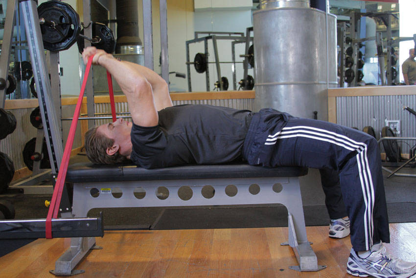

- Secure a band to the base of a rack or the bench. Lay on the bench so that the band is lined up with your head.
- Take hold of the band, raising your elbows so that the upper arm is perpendicular to the floor. With the elbow flexed, the band should be above your head. This will be your starting position.
- Extend through the elbow to straighten your arm, keeping your upper arm in place. Pause at the top of the motion, and return to the starting position.